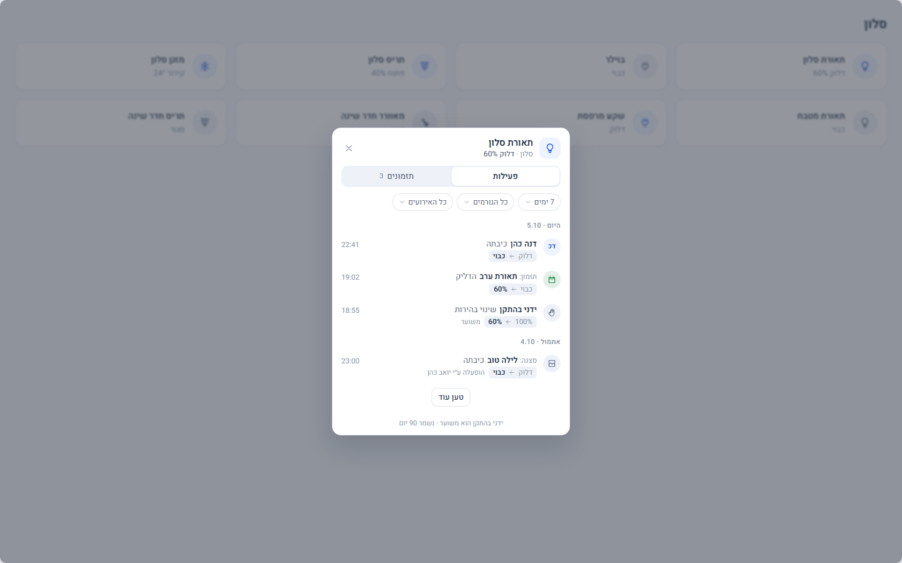
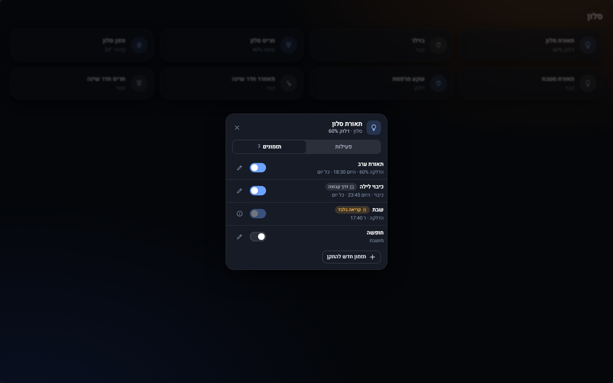
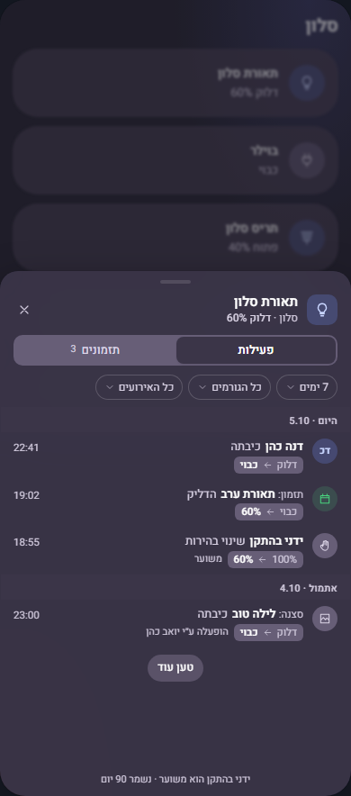
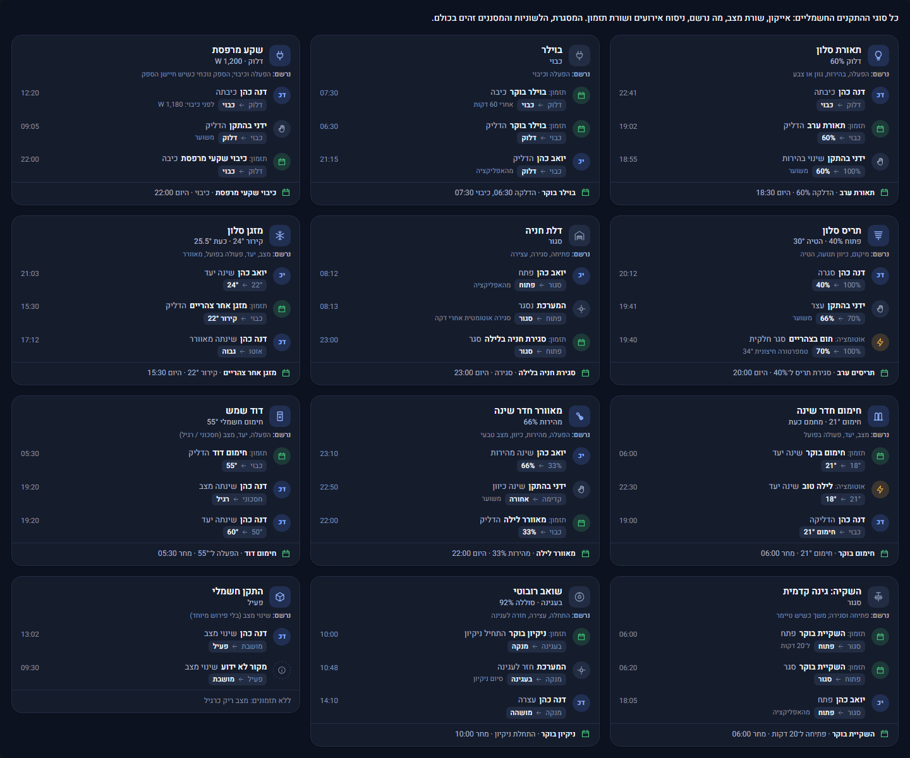
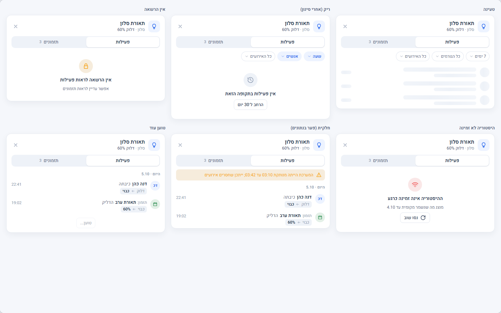
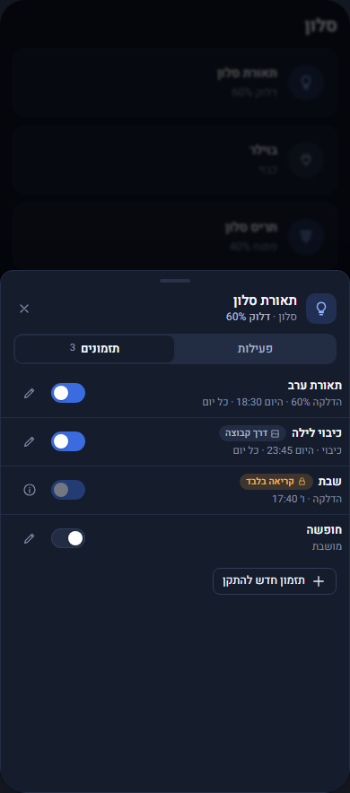

עיצוב סטטי, נתונים מומצאים, בלי מגע במערכת חיה. הסרגל בגלריה בוחר מסך, רוחב (1440 / 820 / 390), בהיר/כהה וסקין. מסמך השינוי: docs/changes/CR-032-DEVICE-ACTIVITY.md.
| מסך | קישור |
|---|---|
| לוח כל 12 סוגי ההתקנים | בהיר כהה bubble |
| פעילות | שולחן עבודה טלפון |
| מסננים | שולחן עבודה טלפון (גיליון, ui.dd_phone) |
| תזמונים | שולחן עבודה טלפון |
| עריכת תזמון בתוך החלון | שולחן עבודה טלפון |
| מצבים (טעינה, ריק, אין הרשאה, לא זמין, חלקית, טוען עוד) | פעילות תזמונים |
| לחיצה ארוכה והחלופות (הדגמה חיה) | שולחן עבודה טלפון |
| מה נחשב חשמלי ואיך הממשק יודע | פתיחה |
| סקינים וכהה | כהה bubble domus כהה טלפון bubble כהה עורך, domus |
צילומי המסך של סבב 2 ב־screens/ ושל סבב 1 ב־screens/v1/ (הכול מופק עם shoot.mjs).
ההחלטות האחרות (עורך תזמון מלא בתוך החלון, ללא רמז קבוע על המסך, חצי שנייה ללחיצה ארוכה, נגני מדיה מחוץ לשלב הראשון, "ידני בהתקן (משוער)", פיצול לשלוש חצאי גרסאות) נשארות לפי ההמלצות מהסבב הקודם, אלא אם תגיד אחרת.





